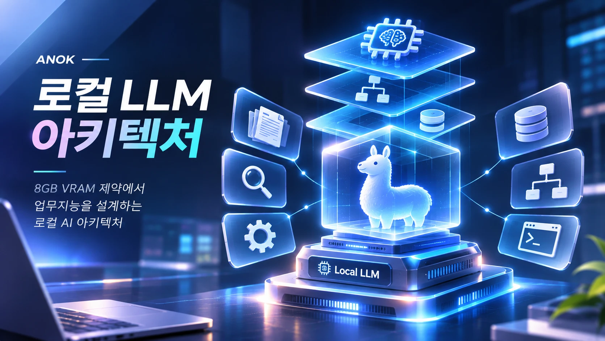

문제를 구조로 바꿉니다
요구사항을 받으면 바로 코드를 쓰지 않고, 입력·출력·제약과 책임 경계를 먼저 정리합니다.
일하는 6단계 보기왜 저와 함께해야 할까요
요구사항을 받으면 바로 코드를 쓰지 않고, 입력·출력·제약과 책임 경계를 먼저 정리합니다.
일하는 6단계 보기LLM을 단순 호출이 아니라 권한·데이터·백엔드 흐름과 맞물리는 구성 요소로 설계합니다.
ANOK 사례 보기8GB VRAM처럼 한정된 자원에서도 동작하도록 처리 단계를 나누고 정보 흐름을 줄입니다.
로컬 LLM 사례 보기대표 작업
흩어진 회의·문서·일정·결재를 AI와 백엔드로 하나의 흐름에 연결합니다.

8GB VRAM 안에서 업무 요청을 처리하도록 단계를 나눠 설계합니다.
흩어진 기술 지식을 문제 중심으로 엮어, 필요할 때 바로 찾게 합니다.
일하는 방식
누가, 왜 불편한가?
입력·출력·제약은 무엇인가?
경계·의존성·데이터 흐름은?
먼저 검증할 최소 기능은?
예상대로 동작하는가?
실패에서 무엇을 바꿀까?
기술
시스템 설계, 백엔드, AI 서비스에 관한 이야기와 제안을 환영합니다.